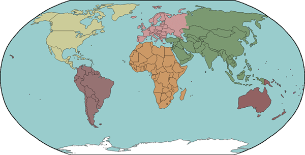

1. Who was the top goal score in Laliga 2016/2017 season?
RonaldoMessiSuarez
2. Which British TV presenter was known for his "Cheap as chips" catchphrase?
The Princess BrideDianahRobert
3.In 16th century Arabic it was known as 'qahwa', the Turkish called it 'kahveh' - what is it known as in the UK?
Coffee Tea Coldrink
4.Which nation defeated England in the 2018 Women's Rugby Union World Cup Final to win the trophy for a fifth time?
New ZealandSouth AfricaAmerica
5.What is the French phrase for 'If it pleases you'?
S'il Vous PlaitTavezRodriguez
Score
{{score}} out of 15
General Knowledge Quizz
According to folklore, what kind of animal is 'Black Shuka' which is said to roam East Anglia?DogBull DogCheaterAccording to folklore, what kind of animal is 'Black Shuck' which is said to roam East Anglia?GloriousGoodwoodAaspHow old was Neil Armstrong when he first walked on the moon?TweetyFortyFiftyWhat is the capital city of South Africa?PretoriaHararespaniniWhat is the name of the official currency of South AfricaRandDollareuro
Quizz For Countries

Which is the only American state to begin with the letter 'p'? PennsylvaniaPakinstanPeruName the world's biggest island.GreenlandIndiaMadagascarWhat is the world's longest river?TugelaHaraeMideastName the world's largest ocean.PacificOceanMalawiWhat is the capital city of Spain? .MadridBarcelonaLondon